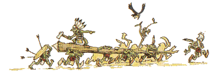

|
Erdei Goblinok

Óvilág sötét
erdei sok rejtélyes és veszélyes teremtménynek
szolgálnak otthonául, fosztogató Káosz
harcosok bandáinak, ravasz beastman-eknek és
minotauruszoknak. Ezekben az ocsmány, õsöreg
erdõkben élnek az Erdei goblinok.
Az Erdei goblinok fizikájukat
tekintve nem különböznek a többi goblintól.
Õk is ugyanolyan magasak és ugyanolyan zöldbõrûek,
mint társaik. Amirõl fel lehet õket ismerni,
hogy õk nem hordanak felesleges ruhadarabokat és
testüket festékkel és tollakkal ékesítik. A
tollakat gyakran szúrják közvetlenül a bõrbe,
ugyanis õk nem éreznek ilyenkor, csak kis fájdalmat.
A különbözõ törzsek gyakran használnak különbözõ
színû és összetételû tollalak maguk azonosítására.
A fémek nagyon ritkák
ezekben az erdõkben, ezért az Erdei goblinok
gyakran kereskednek más goblin törzsekkel.
Foglyokat és gombákat adnak a hegyekbõl származó
ércekért, aminek õk eléggé híján vannak.
Ezen oknál fogva az Erdei goblinok elõszeretettel
használnak csontokat és fogakat, páncélok készítésére,
ami dekorációnak sem utolsó.
Az Erdei goblinok harci
mintákat viselnek egész testükön. Az élénk
piros és kék a legnépszerûbb színek. Ezeket
használják, mikor felfestik jellegzetes V-alakú
rangjelzéseiket az arcukra és a karjukra.
Az Erdei goblinok erdejei
hemzsegnek a különbözõ fajta pókoktól és õk
mesterei annak, hogy hogyan találják meg és
hasznosítsák ezeket a lényeket. Megeszik a pókok
legtöbb fajtáját, és ez a lédús csemege
fontosabb nekik, mint az erdõben található egyéb
állatok húsa. Az igazán óriási példányokat
néha elfogják és kereskednek vele, de általában
inkább elkerülik, mert ezek nagyon veszélyesek.
A kisebb, körül-belül ló méretûeket hátasként
használják és lovagolnak rajtuk. Az ennél is
kisebbeket néha házikedvencként tartják.
Az Erdei goblin Sámánok
kis mérges pókokat tartanak a szájukban, akik
megharapják a nyel- vüket, ezért az Erdei
goblin Sámánok teste állandóan át van itatva
a pókok veszélyes toxikus mérgével. Ettõl a Sámán
kicsit õrült lesz. Nyelve megdagad és kék
valamint bíbor színekben tündöklik. Eme furcsa
szokás serkenti agyuk azon részét, mellyel a
varázslatokat irányítják.
A Sámánok a legfõbb
kulcsfigurái az Erdei goblinok pókkultuszának,
mely nagy tiszteletet tu- lajdonít a pókoknak,
mint az erdõ Isteneinek. Az Erdei goblin törzsek
gyakran emelnek festett totemoszlopokat Gork, Mork
és a pókok tiszteletére. A totemoszlopok elõtt
gyûlik össze a törzs, mielõtt elindulnának
kirabolni egy magányos tanyát vagy felégetni néhány
favágó kunyhóját. A pajzsokon és a zászlókon
is gyakran szerepelnek a pókok, valamint pókdíszek
vannak tervezve a zászlórudak csúcsaira és a
fegyverekre is.
| Egység |
M |
Ws |
Bs |
S |
T |
W |
I |
A |
Ld |
| Forest Goblin |
4 |
2 |
3 |
3 |
3 |
1 |
2 |
1 |
5 |
| Boss |
4 |
3 |
4 |
4 |
3 |
1 |
3 |
2 |
5 |
| Big Boss |
4 |
4 |
5 |
4 |
4 |
2 |
4 |
3 |
6 |
| War Boss |
4 |
5 |
6 |
4 |
4 |
3 |
5 |
4 |
7 |
| |
|
|
|
|
|
|
|
|
|
| Shaman |
4 |
2 |
3 |
3 |
4 |
1 |
3 |
1 |
5 |
| Shaman Champion |
4 |
2 |
3 |
4 |
4 |
2 |
3 |
1 |
5 |
| Master shaman |
4 |
2 |
3 |
4 |
4 |
3 |
4 |
2 |
5 |
| Shaman Lord |
4 |
2 |
3 |
4 |
4 |
4 |
5 |
3 |
6 |
Speciális szabályok:
Mint az összes többi
goblin, az Erdei goblinok is félnek elfekkel
harcolni. Ha a goblin egység elfekkel harcol,
akkor legalább kétszer annyian kell, hogy
legyenek, mint a hegyesfülûek, külön- ben
vonatkozik rájuk a félelem szabály (ld. a
Warhammer szabálykönyvben).
fordította: Rincewind
|